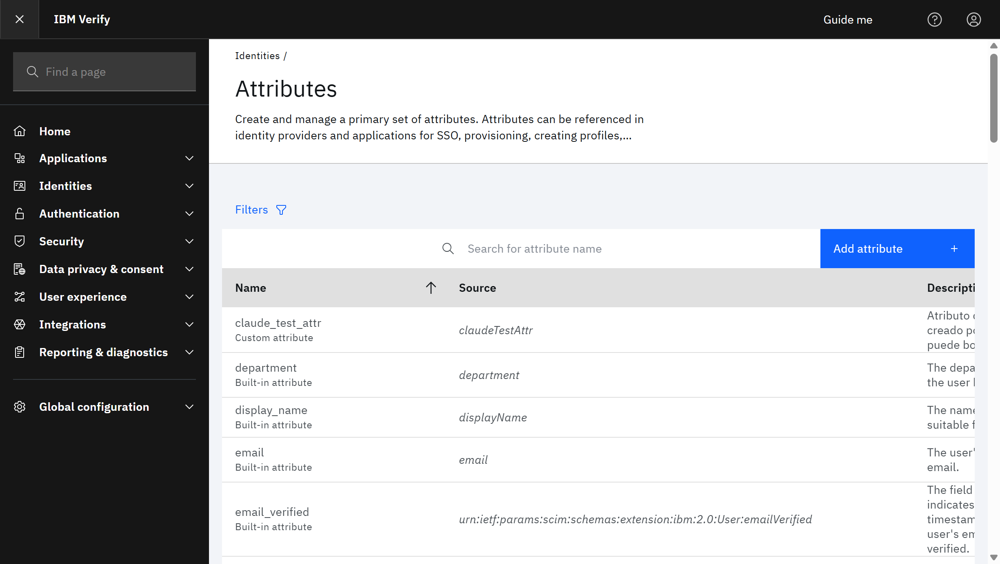

Alta automática de usuarios y grupos en IBM Verify desde n8n, usando SCIM 2.0.
manageGroupMembers).client_id + client_secret (el secret se muestra 1 sola vez).<credential-id>) → pegar {"body":{"client_id":"…","client_secret":"…"}}.<workflow-id> ("Verify: provisionar datos"). ✅ Operativo.Administración: el workflow obtiene token (client_credentials) y hace POST /v2.0/Groups / POST /v2.0/Users. Para vincular miembros usa PATCH /v2.0/Groups/{id} (requiere manageGroupMembers).
i#provision-scim#verify=users+groups"state=OPERATIVO ^D ?9
d2<janus>n8n~scim
auth: POST /v1.0/endpoint/default/token grant=client_credentials
ops:[
createGroup=POST /v2.0/Groups{schemas:[core,ext:ibm],displayName,members[]} # falta ibm->400 CSIAI0137E
createUser=POST /v2.0/Users{realm:cloudIdentityRealm,userCategory:regular}
addMembers=PATCH /v2.0/Groups/{id}{Operations:add members[]} # needs manageGroupMembers
]
ct: scim+json(/v2.0) | json(/v1.0)
wf: <workflow-id> | cred: <credential-id>